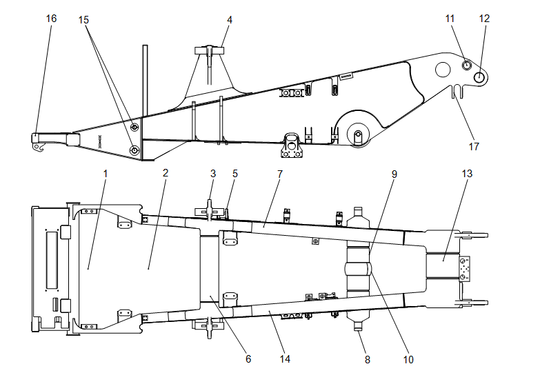

Рама
| 1 | Монтажная зона радиатора |
| 2 | Монтажная зона двигателя |
| 3 | Монтажная зона двигателя |
| 4 | Зона установки платформы |
| 5 | Узел крепления поперечной тяги переднего моста |
| 6 | Верхняя поперечная балка |
| 7 | Правая продольная балка |
| 8 | Монтажная стойка гидроцилиндра подъема |
| 9 | Средняя поперечная балка |
| 10 | Внутренний подшипник носового конуса картер моста |
| 11 | Задняя монтажная точка кузова |
| 12 | Верхняя монтажная точка заднего подвесного цилиндра |
| 13 | Задняя поперечная балка |
| 14 | Левая продольная балка |
| 15 | Узел крепления продольной тяги переднего моста |
| 16 | Передний бампер |
| 17 | Монтажная стойка поперечной тяги картера моста |
Рис. 1 Рама
Рама
Описание и расположение (см. рис. 1)
Рама представляет собой двухблочную конструкцию с полной сварной конструкцией, состоящей из продольных балок и поперечных балок. Материал продольной балки - высокопрочная сталь. Такая рама имеет простую и прочную конструкцию, может эффективно предотвращать концентрацию напряжений, а по сравнению с весом легче.
Управление
Рама представляет собой основную опорную конструкцию карьерного самосвала., которая обеспечивает монтажные точки для передней и задней подвесок, мостового блока в сборе, модуля двигателя, привода, платформы, кабины и кузова.
Запрос неисправностей
При ремонте поврежденных деталей обратиться за помощью к NHL.
Ремонт
Регулярно проверяйте раму, наблюдайте за наличием/отсутствием повреждения. Проводите ремонт под руководством спецперсонала NHL в соответствии с установленными требованиями.
Примечание: Не сварить на потолочной и нижней плитах рамы, если не требуется ремонта. Неправильная сварка уменьшает прочность рамы, ремонт должен осуществляться в соответствии со стандартами сварки NHL
Конструкционные детали –Рама
020-0000
Описание и управление – описание
000-0000
2
3
Конструкционные детали –Рама
020-0000
1
Конструкционные детали –Рама
020-0000
Конструкционные детали –Рама
020-0000
2
Конструкционные детали –Рама
020-0000
3
Иллюстрации
